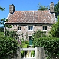

|
Hamptonne |
Dépis qu'lé Trust fut fondé, la société a acquéthit bein des propriétés qué'sé par don ou par acat, et lé Trust est achteu lé deuxième pus grand propriétaithe auprès lé gouvérnement d' Jèrri, les Etats.
Lé Trust espèthe dé préserver pouor lé bénéfice du publyi et pouor l'île des propriétés tch'ont d'la valeu naturel, historique ou pouor lus bieauté.
Ieun des preunmié acats ch'tait Lé Rât, et lé peupl'ye savent sans doute qué chutte propriété fut érnouvlée et appropriée et tchit gangni un prix dans la compétition en Jèrri pouor lé miyeu dessîn en 1999.
Mais lé Trust fut fondé pa'ce qué un tas d'gens 'taient gênée auve les problèmes du dêveloppement dans les 1930, especiallement les bâtisses et huttes lé long des grèves dé l'île.
Un nombre de Jèrriais lus rencontritent pouor êprouver à trouver eune solution à chu problème. Quand y'avait eune possibilité qu'un côti dans La Vallée des Vaux fûsse dêveloppé, Lé Sieur Carlyle Le Gallais acatit chutte propriété pouor lê Trust, et chennechin lus donnit l'opportunité pouor êtablyi légalement lé Trust. Bein du monde supportitent lé Trust et chutte société est à ch't heu responsabl'ye pouor pus qué 130 propriétês dans l'île.
Etant eune société charitabl'ye, lé Trust sé fie sus des donations et des dons pouor payé pouor lé programme essentiel dé l'entrétchien et des r'pathes dé ses propriétés.
Un r'venu important pouor lé Trust veint du loyer que lé Trust er'chait pouor ses propriétés, mais ch'est eune vraie embête, pa'ce qué bein des batisses et des propriétés né sont pon ouvert au publyi comme i'y'a des locataithes en pièche. Enfîn, i'y'a toutes les bouaisies, les prés et les autres pièches comme les falaises tchi sont la pouor lé publyi a en prendre avantage et tout pouor rein. Lé Trust ont eune êtchipe des travailleurs tch'ont la responsabilité dé souongni qué tout s'sait amênagi comme i'faut, espécialement la protection des flieurs et autres pliantes sauvages alentou dé la Mathe au Seigneu et ès Maltièthes à Grouville, dans l's alentours du Mathais d'Grouville.
Les propriétés les pus connues dé chu Trust sont Lé Moulin dé Quétivé, les Bèrrexes à La Grève dé Lé, La Maison Morel, La Tour Victoria, La Ferme à Hamptonne, lé pré des Orchides tchi s'appelle lé Nier Pré, tout près d'La Mathe au Seigneu, et pis lus siège officiel à Ste Mathie, Les Ormes.
Deux dé ches propriétés sont ouvert duthant l'été pouor les touristes et les gens d'Jèrri, Lé Moulin dé Quétivé et Les Bèrrexes à La Grève et pis dreinement Lé Trust ont acaté Lé Moulin dé Tésson et auprès tch'ils éthont finni dé creuser pouor vaie s'i'y a autchune chose de valeu à enregistrer i's'en vont lé dêveloper auve un parchonnyi pour i'faithe des appartéments pouor y d'meuther.
J'avais déja explyitchi comment qué Lé Trust fut fondé en 1936, pouor préserver à tout janmais pouor lé bénéfice du publyi les propriétes tch'ont d'la valeu naturel, historique ou pouor lus bieauté.
Mais lé Trust organise d'autres choses pouor lus membres comme la séthée dans l'hivé, la lectuthe du stembre et les promenades du 'rnouvé et l'été, pûtôt des événements social et pis i'produisent étout deux gazettes touos l'ans pouor les membres.
Lé Trust n'ont qué 2000 membres et i'voudraient encouothagi d'autres à les joindres pa'ce qué ch'est dificile dé faithe toutes les r'pathes et l'entrétchien dé touos les bâtisses et lus propriétés auve bein p'tit d'sou.
Auve l'aide d'eune donâtion récente, Lé Trust a acaté lé Moulîn dé Tésson mais, malheutheusement lé moulin avait 'té néglyigi par les propriétaithes dé d'vant (précédent) et si Lé Trust né l'avaient pon atchéthi achteu, bein vite, j'éthai 'tait trop tard pouor lé graie.
Chu moulîn est eune importante partie dé l'histouaithe dé Jèrri au sujet dé l'archéologie industrielle, espécialement comme i'y'a des ruines d'un vièr moulîn à ieau et pis pus tard, des restants d'un moulin à engîn. Lé Trust né peut pon assolider la restauration du moulîn pa'ce qué il' n'ont pon les fonds pouor lé faithe et i'faut qu'il'aient dé l'aide auve un parchonnyi pour bâti qué se des offices ou des appartéments. Enfin, les pus importantes parties s'sont gardés pouor les montrer au publyi.
Ieune des preunmiés propriétés qué lé Trust atchéthi ch'tait Lé Rât à St Louothains, tout prés de la Fontaine St Martîn. Chutte maîson est du 17iéme sièclye, et Lé Trust décident i'y'a tchique années dé l'approprié pa'ce qué nou'y trouvit dés térribl'yes problémes dé mucreu et i'n'y avait pon des înstallations modérne pouor être assez confortabl'ye pouor y d'meuther.
Duthant lus entchêtes, il' decouvrîtent trais portes t'ch'étaient bliotchies, et ches'chîn ont 'tait restaurés et ouvertes pouor les nouvieaux locataithes. Quouaiqu' les plianchais des chambres n'taient pon en bouonne condition, il'ont ménagi dé pouver les r'nouveler et étout il' pûtent démonter la vielle montée en bouais et la r'pather dans lus tchèrpent'tie à St Mathie.
Pa'ce qué lé nivé dg'ieau souos terre dans chu vaîsinné est bien haut, i'futent oblyigie de faithe deux'trais tuyaux souos la maîson pouor pouver la garder séc et les am'ner à eune égout tchi méne à un canné à côté d'la maîson. Il' ont creuser un pits pouor rempliaichi lé vier pits dans l'pré et r'nouveler tout l'électricité dans la maîson, pouor qu'ou piêsse être otchupée, mais à même temps dé garder lé caractéthe dé chutte propriété.
Lé Trust sont les propriétaithes dé Hamptonne à St Louothains, et bien du monde savent qué chutte propriété est divisée et tchi'y'a trais maîsons dé difféthents siècl'yes tchi nouos montre un bieau portrait dé l'histouaithe sociale dé l'île avau les années.
Y'a bein des propriétés tchi sont sus les falaises au nord de l'île, auve bein des pliantes sauvages de l'île et iou qu'il'y'a des c'mîns pouor lé publyi a y profiter. I'y'a bein des terres achteu qué les fermiers né sont pon prés a travailli et Lé Trust fut d'la peine dé les louer à des louoyis întérresants, et auve la situation chés jours dans l'agritchultuthe, chenna s'en va continnuer.
Françouais Le Maistre
 |
 |
 |
 |
 |
|  |  |
 |
Viyiz étout: